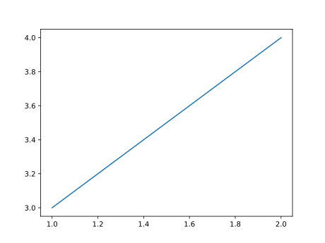

Prerequisite
In this section, classicial ordinary differetnaial equations are used to demonstrate the function of FindSteadyStates.jl. Before entering the following sections, one needs to make sure that FindSteadyState.jl and DifferentialEquations.jl are successfully installed and precompiled.
using FindSteadyStates
using DifferentialEquations
using LabelledArraysExponential Decay
deS = DEsteady(func=x->x, u0= [1.0,2.0], p=1.0)DEsteady
func: #1 (function of type Main.var"#1#2")
p: Float64 1.0
u0: Array{Float64}((2,)) [1.0, 2.0]
method: SSRootfind{SteadyStateDiffEq.var"#2#4"}
deS = DEsteady(func=x->x, u0= [1.0,2.0], p=1.0)DEsteady
func: #3 (function of type Main.var"#3#4")
p: Float64 1.0
u0: Array{Float64}((2,)) [1.0, 2.0]
method: SSRootfind{SteadyStateDiffEq.var"#2#4"}
fig, ax = subplots()
ax = plot([1,2],[3,4])
@info pwd()[ Info: /home/runner/work/FindSteadyStates.jl/FindSteadyStates.jl/docs/build
Bistable Model
There are two stable nodes and one saddle nodes in balanced bistable model.
# Model
function bistable_ode!(du, u, p ,t)
s1, s2 = u
K1, K2, k1, k2, k3, k4, n1 , n2 = p
du[1] = k1 / (1 + (s2/K2)^n1) - k3*s1
du[2] = k2/ (1 + (s1/K1)^n2) - k4*s2
end
# Parameters
p_ = [1., 1., 20., 20., 5., 5., 4., 4.]
u_1 = [3., 1.]
# Define a problem
de = DEsteady(func=bistable_ode!, p=p_, u0= u_1, method=SSRootfind())
j_gen = jacobian(de) # jacobian generator
# Searching method and domain
param_gen = ParameterGrid([
(0.1,5.,100),
(0.1,5.,100)
])
# Solve
sols = solve(de, param_gen)
# Remove redundancy
steadies = unique(sols)
# Jacobian
jac_ms = j_gen.(steadies)
# Stability
stab_modes = StabilityType.(jac_ms)
# Testing and validation
num_stable = sum(getfield.(stab_modes, :stable))
num_saddle = sum(getfield.(stab_modes, :saddle))num_stable=2
num_saddle=1